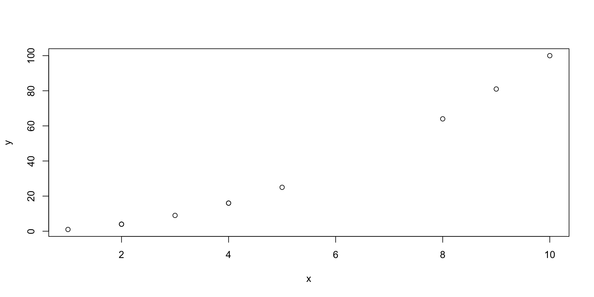

[1] 16Lecture 07 - Computational Tools for Bioengineers
R and RStudio
Bill Cresko
2026-11-09
Goals for today
- Using R Studio and Visual Studio Code (VSC) as script editors
- R and Quarto Markdown
- Vibe Coding with LLMs
- Git and GitHub
What is a Shell Script?
- Text file containing Unix commands
- Automates repetitive tasks
- Makes complex workflows reproducible
- Essential for bioinformatics pipelines
- Can include:
- Variables and arrays
- Conditionals (if/then/else)
- Loops (for/while)
- Functions
- Command-line arguments
Creating Your First Script
#!/bin/bash
# This is a shebang - tells system which interpreter to use
# This is a comment - documents your code
echo "Hello, Bioengineering!"
# Set a variable
NAME="DNA Analysis"
echo "Running $NAME"
# Use command output as variable
DATE=$(date +%Y-%m-%d)
echo "Analysis date: $DATE"
# Simple calculation
COUNT=5
DOUBLE=$((COUNT * 2))
echo "Double of $COUNT is $DOUBLE"Save as first_script.sh and run with bash first_script.sh
Making Scripts Executable
Best practice: Always use chmod +x for your scripts
R statistical programming language
Why use R?
- Good general scripting tool for statistics and mathematics
- Powerful and flexible and free
- Runs on all computer platforms
- New enhancements coming out all the time
- Superb data management & graphics capabilities
- Reproducibility - can keep your scripts to see exactly what was done
- You can write your own functions
- Lots of online help available
- Can use a nice GUI front end such as
Rstudio - Can embed your
Ranalyses in dynamic, polished files usingQuarto Markdown - Quarto Markdown can be reused for websites, papers, books, presentations…
R scripts and Quarto Markdown
- Often we want to write scripts that can just be run -
R scripts - We can also embed code in Quarto Markdown files that provide more annotations
- This improves interpertability and reproducibility
- You can insert
R code chunksintoQuarto Markdowndocuments
R script basics
A series of R commands that will be executed
Can add comments using hashtags
#
Can have pipes (
|>) to connect one step to the next
BASICS of R
- Commands can be submitted through the terminal, console or scripts
- Notice on these slides I’m evaluating the code chunks and showing output
- Also notice that
Rfollows the normal priority of mathematical evaluation
Assigning Variables
- A better way to do this is to assign variables
- Variables are assigned values using the
<-operator. - Variable names must begin with a letter, but other than that, just about anything goes.
- Do keep in mind that
Ris case sensitive.
Assigning Variables
These do not work
Arithmetic operations on functions
- Arithmetic operations can be performed easily on functions as well as numbers.
- Try the following, and then your own.
- Note that the last of these -
log- is a built in function ofR, and therefore the object of the function needs to be put in parentheses - These parentheses will be important, and we’ll come back to them later when we add arguments after the object in the parentheses
- The outcome of calculations can be assigned to new variables as well, and the results can be checked using the ‘print’ command
Arithmetic operations on functions
STRINGS
- Variables and operations can be performed on characters as well
- Note that characters need to be set off by quotation marks to differentiate them from numbers
- The
cstands forconcatenate - Note that we are using the same variable names as we did previously, which means that we’re overwriting our previous assignment
- A good rule of thumb is to use new names for each variable, and make them short but still descriptive
STRINGS
VECTORS
- In general
Rthinks in terms of vectors (a list of characters, factors or numerical values). - It will benefit any
Ruser to try to write programs with that in mind, as it will simplify most things. - Vectors can be assigned directly using the
c()function and then entering the exact values.
VECTORS
[1] 2 3 4 2 1 2 4 5 10 8 9 [1] 4 9 16 4 1 4 16 25 100 64 81
Figure 1: Each value of x plotted against its square (y = x^2)
Basic Statistics
- Many functions exist to operate on vectors.
- Combine these with your previous variable to see what happens.
- Also, try to find other functions (e.g. standard deviation).
- Notice that the last function (
sample) has an argument (replace=T) - Arguments simply modify or direct the function in some way
- There are many arguments for each function, some of which are defaults
Getting Help
- Getting Help on any function is very easy - just type a question mark and the name of the function.
- There are functions for just about anything within
Rand it is easy enough to write your own functions if none already exist to do what you want to do. - In general, function calls have a simple structure: a function name, a set of parentheses and an optional set of parameters to send to the function.
- Help pages exist for all functions that, at a minimum, explain what parameters exist for the function.
- Help can be accessed a few ways - try them :
Getting Help
Creating vectors
- Creating vector of new data by entering it by hand can be a drag
- However, it is also very easy to use functions such as
seqandsample - Try the examples below; can you figure out what the three arguments in the parentheses mean?
- Try varying the arguments to see what happens.
- Don’t go too crazy with the last one or your computer might slow way down
Creating vectors
[1] 0.0 0.1 0.2 0.3 0.4 0.5 0.6 0.7 0.8 0.9 1.0 1.1 1.2 1.3 1.4
[16] 1.5 1.6 1.7 1.8 1.9 2.0 2.1 2.2 2.3 2.4 2.5 2.6 2.7 2.8 2.9
[31] 3.0 3.1 3.2 3.3 3.4 3.5 3.6 3.7 3.8 3.9 4.0 4.1 4.2 4.3 4.4
[46] 4.5 4.6 4.7 4.8 4.9 5.0 5.1 5.2 5.3 5.4 5.5 5.6 5.7 5.8 5.9
[61] 6.0 6.1 6.2 6.3 6.4 6.5 6.6 6.7 6.8 6.9 7.0 7.1 7.2 7.3 7.4
[76] 7.5 7.6 7.7 7.8 7.9 8.0 8.1 8.2 8.3 8.4 8.5 8.6 8.7 8.8 8.9
[91] 9.0 9.1 9.2 9.3 9.4 9.5 9.6 9.7 9.8 9.9 10.0 [1] 10.0 9.9 9.8 9.7 9.6 9.5 9.4 9.3 9.2 9.1 9.0 8.9 8.8 8.7 8.6
[16] 8.5 8.4 8.3 8.2 8.1 8.0 7.9 7.8 7.7 7.6 7.5 7.4 7.3 7.2 7.1
[31] 7.0 6.9 6.8 6.7 6.6 6.5 6.4 6.3 6.2 6.1 6.0 5.9 5.8 5.7 5.6
[46] 5.5 5.4 5.3 5.2 5.1 5.0 4.9 4.8 4.7 4.6 4.5 4.4 4.3 4.2 4.1
[61] 4.0 3.9 3.8 3.7 3.6 3.5 3.4 3.3 3.2 3.1 3.0 2.9 2.8 2.7 2.6
[76] 2.5 2.4 2.3 2.2 2.1 2.0 1.9 1.8 1.7 1.6 1.5 1.4 1.3 1.2 1.1
[91] 1.0 0.9 0.8 0.7 0.6 0.5 0.4 0.3 0.2 0.1 0.0Creating vectors
[1] 100.00 98.01 96.04 94.09 92.16 90.25 88.36 86.49 84.64 82.81
[11] 81.00 79.21 77.44 75.69 73.96 72.25 70.56 68.89 67.24 65.61
[21] 64.00 62.41 60.84 59.29 57.76 56.25 54.76 53.29 51.84 50.41
[31] 49.00 47.61 46.24 44.89 43.56 42.25 40.96 39.69 38.44 37.21
[41] 36.00 34.81 33.64 32.49 31.36 30.25 29.16 28.09 27.04 26.01
[51] 25.00 24.01 23.04 22.09 21.16 20.25 19.36 18.49 17.64 16.81
[61] 16.00 15.21 14.44 13.69 12.96 12.25 11.56 10.89 10.24 9.61
[71] 9.00 8.41 7.84 7.29 6.76 6.25 5.76 5.29 4.84 4.41
[81] 4.00 3.61 3.24 2.89 2.56 2.25 1.96 1.69 1.44 1.21
[91] 1.00 0.81 0.64 0.49 0.36 0.25 0.16 0.09 0.04 0.01
[101] 0.00Creating vectors
[1] 100.00 98.01 96.04 94.09 92.16 90.25 88.36 86.49 84.64 82.81
[11] 81.00 79.21 77.44 75.69 73.96 72.25 70.56 68.89 67.24 65.61
[21] 64.00 62.41 60.84 59.29 57.76 56.25 54.76 53.29 51.84 50.41
[31] 49.00 47.61 46.24 44.89 43.56 42.25 40.96 39.69 38.44 37.21
[41] 36.00 34.81 33.64 32.49 31.36 30.25 29.16 28.09 27.04 26.01
[51] 25.00 24.01 23.04 22.09 21.16 20.25 19.36 18.49 17.64 16.81
[61] 16.00 15.21 14.44 13.69 12.96 12.25 11.56 10.89 10.24 9.61
[71] 9.00 8.41 7.84 7.29 6.76 6.25 5.76 5.29 4.84 4.41
[81] 4.00 3.61 3.24 2.89 2.56 2.25 1.96 1.69 1.44 1.21
[91] 1.00 0.81 0.64 0.49 0.36 0.25 0.16 0.09 0.04 0.01
[101] 0.00Types of vectors of data
intstands for integersdblstands for doubles, or real numberschrstands for character vectors, or stringsdttmstands for date-times (a date + a time)lglstands for logical, vectors that contain only TRUE or FALSEfctrstands for factors, which R uses to represent categorical variables with fixed possible valuesdatestands for dates
- Integer and double vectors are known collectively as numeric vectors.
- In
Rnumbers are doubles by default.
Types of vectors of data
- Logical vectors can take only three possible values:
FALSETRUENAwhich is ‘not available’.
- Integers have one special value: NA, while doubles have four:
NANaNwhich is ‘not a number’Inf-Inf
Reading in Data Frames in R
- A strength of
Ris being able to import data from an external source - Create the same table that you did above in a spreadsheet like Excel
- Export it to comma separated and tab separated text files for importing into
R. - The first will read in a comma-delimited file, whereas the second is a tab-delimited
- In both cases the header and row.names arguments indicate that there is a header row and row label column
- Note that the name of the file by itself will have R look in the CWD, whereas a full path can also be used
Drawing samples from distributions
- Here is a way to create your own data sets that are random samples.
- Again, play around with the arguments in the parentheses to see what happens.
Drawing samples from distributions

Figure 2: 10,000 normal draws (x) plotted against 10,000 uniform draws (y)
Drawing samples from distributions

Figure 3: The same samples plotted from a two-column matrix made with cbind()
Drawing samples from distributions

Figure 4: Histogram of 10,000 draws from a normal distribution (mean 0, sd 10)
Drawing samples from distributions
- You’ve probably figured out that y from the last example is drawing numbers with equal probability.
- What if you want to draw from a distribution?
- Again, play around with the arguments in the parentheses to see what happens.
Drawing samples from distributions

Figure 5: Histogram of normal draws with the theoretical density curve overlaid
dnorm()generates the probability density, which can be plotted using thecurve()function.- Note that is curve is added to the plot using
add=TRUE
Visualizing Data
- So far you’ve been visualizing just the list of output numbers
- Except for the last example where I snuck in a
histfunction. - You can also visualize all of the variables that you’ve created using the
plotfunction (as well as a number of more sophisticated plotting functions). - Each of these is called a
high levelplotting function, which sets the stage Low levelplotting functions will tweak the plots and make them beautiful
Visualizing Data
- What do you think that each of the arguments means for the plot function?
- A cool thing about
Ris that the options for the arguments make sense. - Try adjusting an argument and see if it works
- Note- most people use the package
GGPlot2for nice scientific graphics
Visualizing Data

Figure 6: A sequence from 0 to 10 plotted as points
Putting plots in a single figure
- On the next slide
- The first line of the lower script tells R that you are going to create a composite figure that has two rows and two columns. Can you tell how?
- Now, modify the code to add two more variables and add one more row of two panels.
Putting plots in a single figure
par(mfrow=c(2,2))
plot (seq_1, xlab="time", ylab ="p in population 1", type = "p", col = 'red')
plot (seq_2, xlab="time", ylab ="p in population 2", type = "p", col = 'green')
plot (seq_square, xlab="time", ylab ="p2 in population 2", type = "p", col = 'blue')
plot (seq_square_new, xlab="time", ylab ="p in population 1", type = "l", col = 'yellow')
Creating Data Frames in R
- As you have seen, in R you can generate your own random data set drawn from nearly any distribution very easily.
- Often we will want to use collected data.
- Now, let’s make a dummy dataset to get used to dealing with data frames
- Set up three variables (hydrogel_concentration, compression and conductivity) as vectors
- Create a data frame where vectors become columns
- Now you have a hand-made data frame with row names
- Take a look at it in the data section of RStudio
Reading in and Exporting Data Frames
Indexing in data frames
- Next up - indexing just a subset of the data
- This is a very important idea in R, that you can analyze just a subset of the data.
- This is analyzing only the data in the file you made that has the factor value ‘mixed’.
Practice reading in transcriptomic data
Summary stats and figures
summary1 <- summary(RNAseq_Data $ENSGACG00000000003)
print (summary1)
hist(RNAseq_Data $ENSGACG00000000003)
boxplot(RNAseq_Data$ENSGACG00000000003)
boxplot(RNAseq_Data$ENSGACG00000000003~RNAseq_Data$Population)
plot(RNAseq_Data $ENSGACG00000000003, RNAseq_Data$ENSGACG00000000003)
boxplot(RNAseq_Data $ENSGACG00000000003~RNAseq_Data$Treatment,
col = "red", ylab = "Expression Level", xlab = "Treatment level",
border ="orange",
main = "Boxplot of variation in gene expression across microbiota treatments")Going further with R
Installing vs. loading packages
install.packages()puts a package on your computer (from CRAN)library()makes it available in this session - restarting R means re-runninglibrary()- “there is no package called …” means you never installed it
- Bioconductor packages (genomics) use
BiocManager::install("name") - Use one function without loading the package:
readxl::read_excel("file.xlsx")
Inspecting objects and getting help
str(mydata) # structure: type, dimensions, first values - your #1 tool
summary(mydata) # quick summary of every column
class(mydata) # what kind of object is this?
dim(mydata) # rows x columns
names(mydata) # column names
?mean # help page for a function
??"linear model" # search help across all packages
sessionInfo() # R version + loaded package versions - put at the end of reportsTip
When an object surprises you, run str() on it first. In Positron or RStudio, the Variables/Environment pane shows the same information.
Common gotchas that bite everyone
- R counts from 1, and
x[-1]drops the first element (it is not “the last” as in Python) =vs==:=assigns or names an argument;==tests equalityNAis contagious:mean(c(1, NA, 3))isNA- usena.rm = TRUE- Floating point:
0.1 + 0.2 == 0.3isFALSE- useall.equal() - Case matters:
Dataanddataare different objects - Working directory: “cannot open file” usually means R is looking in the wrong folder - check
getwd()and use project-relative paths
A taste of the tidyverse: the pipe |>
| Verb | What it does |
|---|---|
filter() |
Keep rows matching a condition |
select() |
Keep or drop columns |
mutate() |
Add or change columns |
arrange() |
Sort rows |
group_by() + summarise() |
Summaries per group |
Note
Read |> as “and then”. The older %>% pipe does the same thing.
A taste of ggplot2: the grammar of graphics
- Data + aesthetic mappings (
aes(): which column goes to x, y, color…) + geoms (points, boxes, lines) - Layers are added with
+ - Same pattern for every plot type - learn it once
- More in Appendix D (R primer) and Appendix E (R command reference)
BioE Computational Tools 2026 - Knight Campus